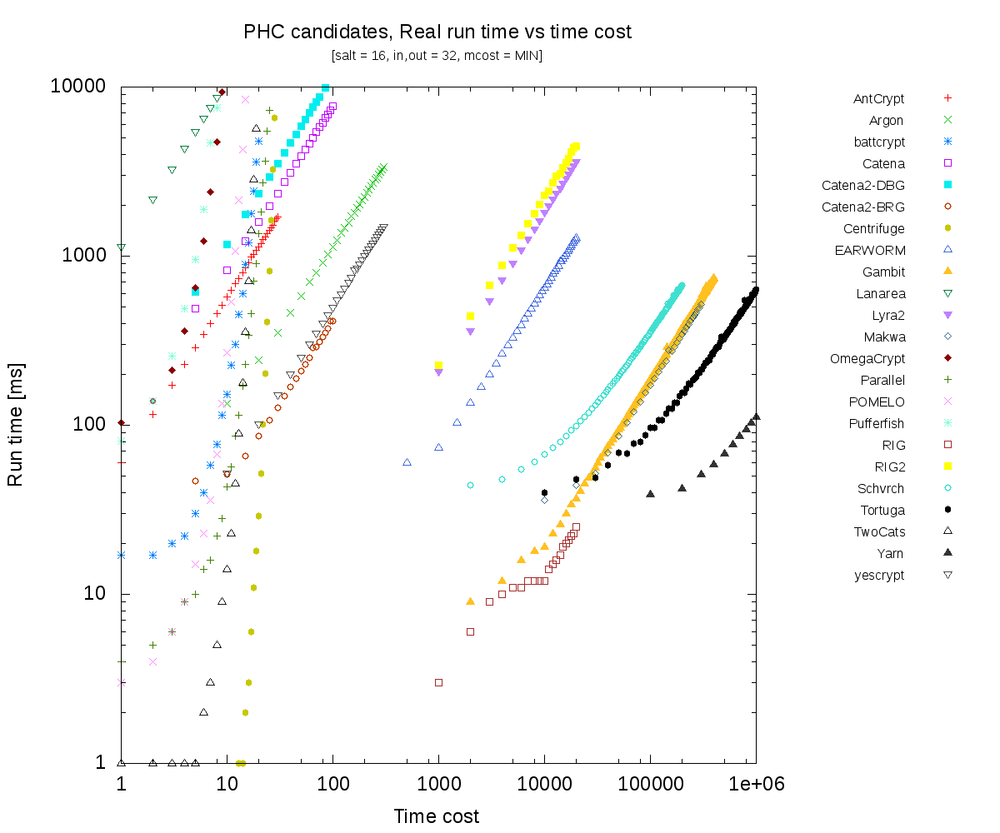

The candidate functions do not implement the API parameters
consistently.
Some functions implement only one of the cost
parameters (memory or time) and the scale differs significantly.
The following tests take the password hash function as a
black-box,
supposing that invalid or unsupported parameters
combination is detected and function returns an error.
The tests always use one input parameter as a variable and measure run time and memory consumption.
All test uses special utility which measures difference in used memory using
getrusage() system call and
run time using clock_gettime(CLOCK_MONOTONIC).
The test run as special forked process started for each test separately.
The tests are repeated for 3 times and arithmetic mean of measurements is used.
Because most of the algoritmhs are in reference source without
optimization, performance comparisons does not make sense.
The intention of tests it to compare limits and generic behaviour of algorithms
on some examples.
The repository copies source code of PHC algoritms and compiles static library for each algorithm.
All changes to submitted code are tracked by quilt, see patches subdirectory
in git (separate for every algorithm).
(Changes includes only makefile modification for library build fixes, if neccessary.)
plen min plen max out len min out len max mcost min mcost max tcost min tcost max
| | | | | | | | |
Antcrypt | | 239 | | | | | | |
Argon | 0 | 256 | | 32 | 1 | 1<<26 | 1 | |
battcrypt | | | | 64 | | | | |
Catena | | | | 64 | 18 | 63 | | |
Catena2-BRG| | | | 64 | | | | |
Catena2-DBG| | | | 64 | | | | |
Centrifuge | | | | | | 63 | | 63 |
EARWORM | | | | | | | | |
Gambit | | 151 | | | | | | |
Lanarea | 1 | | mult 32 | 1 | | 1 | |
Lyra2 | | | | | | | 4 | |
Makwa | | | | | | | | |
MCS_PHS | | 238 | 4 | 64 | | | | |
OmegaCrypt | | 255 | 16,20,28,32,64 | | | | |
Parallel | | | | 64 | |126 << 16| | 106 |
POMELO | | | | 128 | | | | |
Pufferfish | | ? | | ? | | | | |
RIG | | | | 64 | | | | |
RIG2 | | | | 64 | | | | |
Schvrch | | | | | | | | |
Tortuga | | | | | | | | |
TwoCats | | | 32 | 32 | | | | |
Yarn | | | | 64 | | | | |
yescrypt | | | 32 | 32 | | | | |
FIXME: add comments.
The goal is to verify and compare real used memory according
to memory cost parameter.
Test also compares impact to run time (large used memory accesses are
expensive).
# FIXME limits # G1 tcost MIN, mcost variable PAR="-s 16 -i 32 -o 32 " run antcrypt m_cost 0 1 17 "$PAR -t 0 -m " run argon m_cost 0 100 8000 "$PAR -t 0 -m " run battcrypt m_cost 0 1 16 "$PAR -t 0 -m " run catena m_cost 0 1 25 "$PAR -t 0 -m " run catena2-dbg m_cost 0 1 25 "$PAR -t 0 -m " run catena2-brg m_cost 0 1 25 "$PAR -t 0 -m " run centrifuge m_cost 0 1 23 "$PAR -t 0 -m " run earworm m_cost 0 1 19 "$PAR -t 1 -m " #run gambit m_cost 0 1 20 "$PAR -t 1 -m " # cost/memory dependent run lanarea m_cost 0 10 300 "$PAR -t 1 -m " run lyra2 m_cost 0 200 10000 "$PAR -t 1 -m " #run makwa m_cost 0 1 20 "$PAR -t 0 -m " # no mcost #run mcs_phs m_cost 0 1 20 "$PAR -t 1 -m " # cost/memory dependent run omegacrypt m_cost 0 1 11 "$PAR -t 0 -m " #run parallel m_cost 0 1 2000 "$PAR -t 0 -m " run pomelo m_cost 0 1 17 "$PAR -t 0 -m " run pufferfish m_cost 0 1 15 "$PAR -t 0 -m " # no mcost run rig m_cost 0 1 17 "$PAR -t 1 -m " run rig2 m_cost 0 1 17 "$PAR -t 1 -m " run schvrch m_cost 0 1000 50000 "$PAR -t 0 -m " run tortuga m_cost 0 10000 1048575 "$PAR -t 0 -m " run twocats m_cost 0 1 20 "$PAR -t 0 -m " run yarn m_cost 0 1 25 "$PAR -t 0 -m " run yescrypt m_cost 0 1 20 "$PAR -t 0 -m "

Figure 2: Test 1 – Variable memory cost (impact to run time)
The goal is to verify and compare run time according to time cost parameter.
Test also compares impact to used memory (in theory there shouldn't be
significant increase).
# FIXME limits # G2 mcost min, tcost variable PAR="-s 16 -i 32 -o 32 " run antcrypt t_cost 0 1 30 "$PAR -m 10 -t " run argon t_cost 0 10 300 "$PAR -m 500 -t " run battcrypt t_cost 0 1 20 "$PAR -m 5 -t " run catena t_cost 0 5 100 "$PAR -m 18 -t " run catena2-brg t_cost 0 5 100 "$PAR -m 14 -t " run catena2-dbg t_cost 0 5 100 "$PAR -m 14 -t " run centrifuge t_cost 0 1 28 "$PAR -m 0 -t " run earworm t_cost 0 500 20000 "$PAR -m 10 -t " #run gambit t_cost 0 2000 200000 "$PAR -m 31 -t " # cost/memory dependent run lanarea t_cost 0 1 8 "$PAR -m 150 -t " run lyra2 t_cost 0 1000 20000 "$PAR -m 100 -t " run makwa t_cost 0 10000 300000 "$PAR -m 0 -t " #run mcs_phs t_cost 0 2000 200000 "$PAR -m 0 -t " # cost/memory dependent run omegacrypt t_cost 0 1 9 "$PAR -m 2 -t " run parallel t_cost 0 1 26 "$PAR -m 0 -t " run pomelo t_cost 0 1 15 "$PAR -m 5 -t " run pufferfish t_cost 0 1 9 "$PAR -m 10 -t " run rig t_cost 0 1000 20000 "$PAR -m 5 -t " run rig2 t_cost 0 1000 20000 "$PAR -m 5 -t " run schvrch t_cost 0 2000 200000 "$PAR -m 1000 -t " run tortuga t_cost 0 10000 1048575 "$PAR -m 100000 -t " run twocats t_cost 0 1 20 "$PAR -m 7 -t " run yarn t_cost 0 100000 10000000 "$PAR -m 15 -t " run yescrypt t_cost 0 10 300 "$PAR -m 10 -t "

Figure 3: Test 2 – Variable time cost (impact to memory use)

Figure 4: Test 2 – Variable time cost (impact to run time)
The test illustrates that run time is not dependent on input length.
# FIXME limits # G3 input len 1-MAX, mcost, tcost, output fixed PAR="-h -s 16 -o 32 " MAX=300 STEP=1 run antcrypt i_len 1 $STEP $MAX "$PAR -m 0 -t 800 -i " run argon i_len 1 $STEP $MAX "$PAR -m 0 -t 2000 -i " run battcrypt i_len 1 $STEP $MAX "$PAR -m 0 -t 17 -i " run catena i_len 1 $STEP $MAX "$PAR -m 18 -t 0 -i " run catena2-brg i_len 1 $STEP $MAX "$PAR -m 14 -t 10 -i " run catena2-dbg i_len 1 $STEP $MAX "$PAR -m 10 -t 10 -i " run centrifuge i_len 1 $STEP $MAX "$PAR -m 0 -t 21 -i " run earworm i_len 1 $STEP $MAX "$PAR -m 0 -t 1000 -i " run gambit i_len 1 $STEP $MAX "$PAR -m 30001 -t 30001 -i " run lanarea i_len 1 $STEP $MAX "$PAR -m 1 -t 600 -i " run lyra2 i_len 1 $STEP $MAX "$PAR -m 3 -t 10000 -i " run makwa i_len 1 $STEP $MAX "$PAR -m 0 -t 30000 -i " run mcs_phs i_len 1 $STEP $MAX "$PAR -m 0 -t 30000 -i " run omegacrypt i_len 1 $STEP $MAX "$PAR -m 0 -t 1 -i " run parallel i_len 1 $STEP $MAX "$PAR -m 0 -t 11 -i " run pomelo i_len 1 $STEP $MAX "$PAR -m 0 -t 13 -i " run pufferfish i_len 1 $STEP $MAX "$PAR -m 0 -t 12 -i " run rig i_len 1 $STEP $MAX "$PAR -m 1 -t 500000 -i " run rig2 i_len 1 $STEP $MAX "$PAR -m 1 -t 3000 -i " run schvrch i_len 1 $STEP $MAX "$PAR -m 0 -t 12000 -i " run tortuga i_len 1 $STEP $MAX "$PAR -m 0 -t 80000 -i " run twocats i_len 1 $STEP $MAX "$PAR -m 7 -t 12 -i " run yarn i_len 1 $STEP $MAX "$PAR -m 0 -t 500000 -i " run yescrypt i_len 1 $STEP $MAX "$PAR -m 10 -t 10 -i "

The test illustrates that run time is not dependent on output length.
# FIXME limits # G4 output len 1-MAX, mcost, tcost, input fixed PAR="-h -s 16 -i 32 " MAX=300 STEP=1 run antcrypt o_len 1 $STEP $MAX "$PAR -m 0 -t 800 -o " run argon o_len 1 $STEP $MAX "$PAR -m 0 -t 2000 -o " run battcrypt o_len 1 $STEP $MAX "$PAR -m 0 -t 17 -o " run catena o_len 1 $STEP $MAX "$PAR -m 18 -t 0 -o " run catena2-brg o_len 1 $STEP $MAX "$PAR -m 14 -t 10 -o " run catena2-dbg o_len 1 $STEP $MAX "$PAR -m 10 -t 10 -o " run centrifuge o_len 1 $STEP $MAX "$PAR -m 0 -t 21 -o " run earworm o_len 1 $STEP $MAX "$PAR -m 0 -t 1000 -o " run gambit o_len 1 $STEP $MAX "$PAR -m 30001 -t 30001 -o " run lanarea o_len 1 $STEP $MAX "$PAR -m 1 -t 600 -o " run lyra2 o_len 1 $STEP $MAX "$PAR -m 3 -t 10000 -o " run makwa o_len 1 $STEP $MAX "$PAR -m 0 -t 30000 -o " run mcs_phs o_len 1 $STEP $MAX "$PAR -m 0 -t 30000 -o " run omegacrypt o_len 1 $STEP $MAX "$PAR -m 0 -t 1 -o " run parallel o_len 1 $STEP $MAX "$PAR -m 0 -t 11 -o " run pomelo o_len 1 $STEP $MAX "$PAR -m 0 -t 13 -o " run pufferfish o_len 1 $STEP $MAX "$PAR -m 0 -t 12 -o " run rig o_len 1 $STEP $MAX "$PAR -m 1 -t 500000 -o " run rig2 o_len 1 $STEP $MAX "$PAR -m 1 -t 3000 -o " run schvrch o_len 1 $STEP $MAX "$PAR -m 0 -t 12000 -o " run tortuga o_len 1 $STEP $MAX "$PAR -m 0 -t 80000 -o " run twocats o_len 1 $STEP $MAX "$PAR -m 7 -t 12 -o " run yarn o_len 1 $STEP $MAX "$PAR -m 0 -t 500000 -o " run yescrypt o_len 1 $STEP $MAX "$PAR -m 10 -t 10 -o "
Figure 6: Test 4 – Impact of output length to run time